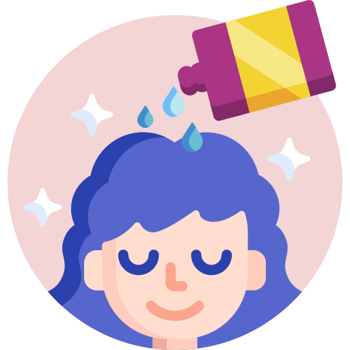
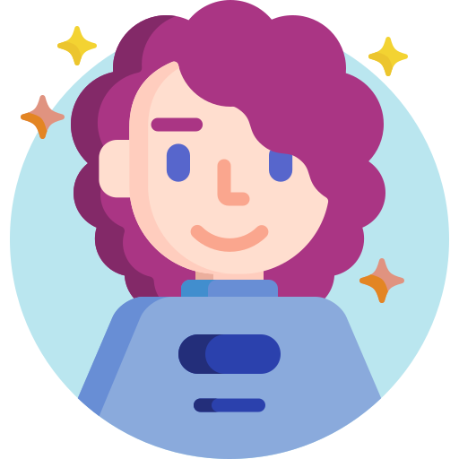
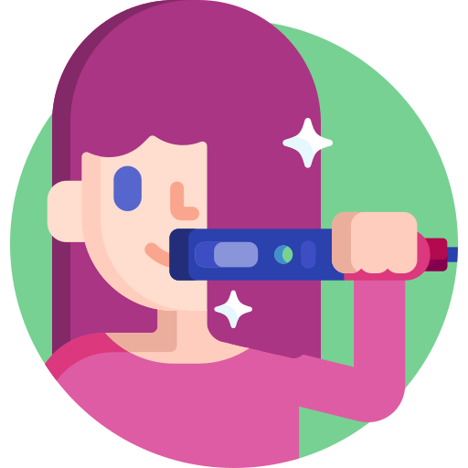

Serviços

Corte
Cortes modernos e personalizados para realçar sua beleza e estilo.

Hidratação
Tratamentos que devolvem brilho, maciez e vitalidade aos fios.

Progressiva
Alisamentos com efeito duradouro, respeitando a saúde do cabelo.
Selagem
Tratamentos que fortalecem e selam a cutícula capilar, mantendo o fio liso e saudável.

Penteados
Penteados sofisticados para festas, eventos e ocasiões especiais.